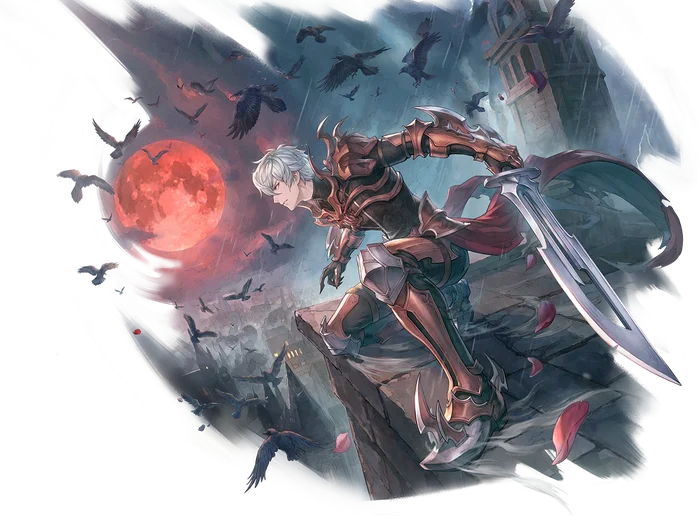

Third tier
Guillotine Cross
Guillotine Cross is the alternative advancement option for Assassins. While Assassin Crosses eschew dependency on Poison for their damage, preferring to rely entirely on combat skill, the Guillotine Cross has no such inhibitions. Their playstyle revolves around rapid and repeated application of the Poison Status, both to debilitate enemies and set up their own skills for stronger combos.
The key skill to the entire Guillotine Cross kit is their new Blade Enchant, Fatal Blades. This Blade Enchant coats the user's weapon with a specialized toxin, altering the behavior of any Poison Status they inflict.
Once the Guillotine Cross has chosen their toxin, they can turn their attention to one of two skill tree paths. The first is a set of weapon skills, taking advantage of the user's Blade Enchant and the enemy's Poison status to deal exceptional physical damage. The tree culminates in Final Fang, a single target skill which consumes the targets Poison and Deadly Poison to deal incredible damage.
Alternatively, the Guillotine Cross can focus on Toxin skills, a set of ranged abilities that turn them into somewhat of a Ranged Caster. These skills excel at inflicting the Poison Status to a wide range of enemies and amplifying that Poison Status to deal more damage. The tree is capped off by Toxic Shock, a ranged physical attack that does minor damage, but if the target is Poisoned, causes them to explode and deal massive damage across a wide area.

Skill list
Skills
Grouped the way the tree is grouped. Names, types and level caps come from the player wiki, so they match what you see in game.
Core Skills2 skills
-
Fatal BladesBlade EnchantLv 5
Poison-coating Blade Enchant that reshapes the user's Poison.
Coats the user's weapon with a specialized toxin, modifying the Poison status inflicted by them. Each level applies a different poison. The poisons required to activate this skill from level 2 onward must be crafted.
-
Venom EaterHealingLv 5
Consumes the target's Poison to heal the user.
Consumes any poison suffered by the target to heal the user. The amount of healing is based on the strength of the target's Poison. If the target is suffering from both Poison and Deadly Poison, only Poison will be consumed.
Toxin Skills5 skills
-
Toxic ShadowToxinLv 5
Self-poisoning buff that empowers all Toxin skills.
The user imbibes a powerful toxin that deals constant damage to them over time, but in exchange massively increases their physical abilities. The damage taken from this skill is treated as Poison Damage, but is not increased by the user's Poison Damage bonuses and cannot be cured or resisted. While active, the user gains a bonus to ASPD Limit, Movement Speed, and Attack, and all Toxin skills are enhanced.
-
Toxic BreathToxinLv 5
Poison AoE breath.
The user unleashes a blast of toxic air, dealing Poison Property Physical Damage to all enemies in the targeted area. All enemies struck have a chance of being inflicted with the Poison Status. During Toxic Shadow, this skill inflicts Deadly Poison instead, and the chance is doubled.
Works withToxic Shadow
-
Toxic SurgeToxinLv 5
Amplifies a target's existing Poison.
Amplifies the Poison suffered by the target, refreshing its duration and increasing its damage. The target additionally takes a burst of Poison property damage that is treated as Poison Status Damage. A target's poison can only be enhanced by Toxic Surge once, no matter how many characters apply the effect. During Toxic Shadow, this skill can be used on non-Poisoned targets.
Works withToxic Shadow
-
Toxic CloudToxinLv 5
Lingering poison gas field.
Creates a short-lived cloud of toxic gas that repeatedly damages enemies within its area. Enemies struck have a chance of being Poisoned. During Toxic Shadow, the damage dealt is treated as Poison Status Damage, and the skill's damage interval is twice as fast.
Works withToxic Shadow
-
Toxic ShockToxinLv 10
Detonates a Poisoned target for massive AoE damage.
Deals a moderate amount of Poison Property physical damage to a single target. If the target is suffering from Poison or Deadly Poison, instead it consumes the status to do massive Poison Property damage to all enemies in an area around them. During Toxic Shadow, all enemies struck receive the Deadly Poison status.
Works withToxic Shadow
Blade Skills5 skills
-
Thirsting FangsBladeLv 5
Stacks a second Guillotine Cross poison on the weapon.
Temporarily applies a second Guillotine Cross toxin to the user's weapon. This second poison stacks with both Fatal Blades and ordinary Assassin Blade Enchants. While active, all Blade Enchants are disabled (but not removed). Multiple copies of the same toxin (from Fatal Blades and this skill) do not stack.
Works withFatal Blades
-
Piercing FangBladeLv 5
Quick stab that inflicts Poison.
Deal a quick, piercing stab to a single target, attempting to inflict the Poison status. If the target is already Poisoned, this skill ignores Defense.
During Toxic Blades, this skill inflicts Deadly Poison instead.
During Flashing Blades, this skill additionally inflicts Vulnerable.
During Rejuvenating Blades, this skill additionally inflicts Slow.
During Fatal Blades, the skill is guaranteed to be Critical against poisoned enemies.
Works withFatal Blades
-
Seeking FangBladeLv 5
Long-range lunge with enchant-based effects.
Lunge at a distant target, dealing significant damage. If it strikes a Poisoned enemy, this skill cannot miss. If it strikes an enemy with Deadly Poison, it is guaranteed to Crit.
During Toxic Blades, this skill additionally inflicts Poison.
During Flashing Blades, this skill's cooldown is halved.
During Rejuvenating Blades, this skill increases the user's Movement Speed for a short time.
During Fatal Blades, the skill is guaranteed to be Critical against poisoned enemies.
Works withFatal Blades
-
Hurricane FangBladeLv 5
Spinning AoE with enchant-based effects.
The user spins wildly with their weapon, tearing apart enemies in an area around them.
During Toxic Blades, this skill's Cooldown is reduced for each Poisoned enemy it strikes.
During Flashing Blades, this skill inflicts Blind.
During Rejuvenating Blades, this skill grants the user the Endure effect for a short time.
During Fatal Blades, the skill is guaranteed to be Critical against poisoned enemies.
Works withFatal Blades
-
Final FangBladeLv 10
Consumes Poison and Deadly Poison for incredible damage.
Delivers a final, fatal blow to a single target, consuming their Poison and Deadly Poison Statuses to deal incredible damage. If the target is not suffering from Poison or Deadly Poison, the skill deals half damage.
During Toxic Blades, the target's Poison and Deadly Poison are refreshed instead of consumed.
During Flashing Blades, this skill ignores Defense.
During Rejuvenating Blades, this skill grants the user the Hallucination Walk effect for a short time.
During Fatal Blades, the skill is guaranteed to be Critical against poisoned enemies.
Works withFatal Blades
Come find out what changed
Make an account now, grab the client, and be there when the servers go up.